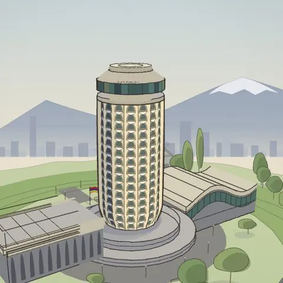

Художественная реставрация — цвета восстановлены по памяти, это не документ. Գեղարվեստական վերականգնում է, ոչ թե փաստաթուղթ։
Չկա
շենքեր, որոնք այլևս չկան здания, которых больше нет
Рисую снесённые здания Еревана по архивным фото и собираю их в 3D — чтобы на них снова можно было посмотреть со всех сторон.
Альбом · Ալբոմ
-

Кукурузник
Երիտասարդական պալատ
открыть 3D → -
рисую сейчасնկարում եմ
Площадь Ленина
Լենինի հրապարակ, 1970-ականներ
-
скороշուտով Ещё одно здание — скоро в альбоме
-
скороշուտով Ещё одно здание — скоро в альбоме